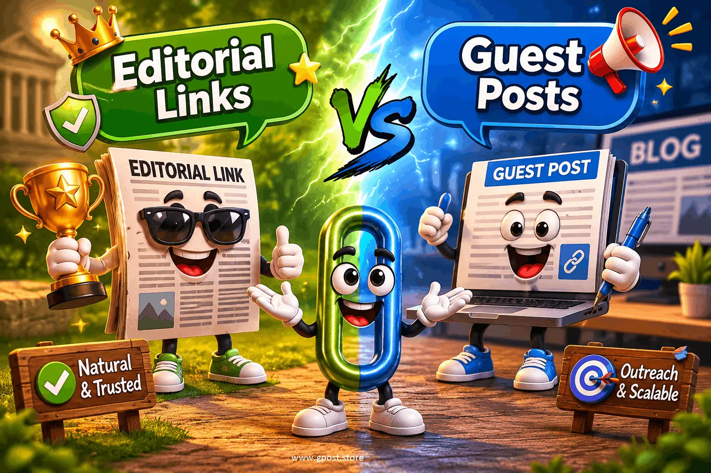

Difference between editorial links and guest posts : Complete Guide for 2026 SEO Strategy
Difference between editorial links and guest posts is one of the most important SEO concepts that separates fast-growing websites from those stuck on page two of Google. Many site owners in the U.S. still confuse these two link-building methods, leading to wasted outreach efforts, weak backlink profiles, and poor long-term rankings. In 2026, Google’s algorithm has become far more sensitive to how a backlink is earned, not just where it is placed. That means understanding this distinction is critical if you want sustainable organic traffic growth.
The real challenge is that both strategies look similar on the surface. Both involve backlinks, content placement, and authority signals. However, when you look deeper into editorial link building vs guest posting strategy, you quickly realize they operate on completely different trust levels. This article breaks down everything in a practical, expert-driven way so you can build smarter SEO campaigns that actually move rankings.
What Is Difference between editorial links and guest posts?
The Difference between editorial links and guest posts refers to how backlinks are acquired and why they exist. Editorial links are naturally placed by website owners or journalists when they reference valuable content, while guest posts are manually created articles published on external websites with embedded backlinks inserted through outreach efforts.
Editorial links usually appear in authoritative blogs, news websites, or industry publications without any request from the site owner. Guest posts, on the other hand, are part of a planned outreach campaign where marketers pitch content in exchange for backlinks. For example, a SaaS company being cited in a TechCrunch article earns an editorial link, while a digital marketer writing a “Top SEO Tools” guest post on a niche blog is using guest posting.
In simple terms, editorial links are earned through authority, while guest posts are acquired through contribution. This difference directly impacts SEO value, trust signals, and long-term ranking stability.
Why Difference between editorial links and guest posts Matters for SEO in 2026
The Difference between editorial links and guest posts matters more than ever because Google now evaluates backlink intent, context, and authority signals with AI-driven ranking systems. A backlink is no longer just a vote—it is a trust signal evaluated within a broader content ecosystem.
Based on industry research from Moz, backlinks still influence over 60% of ranking strength in competitive niches, but quality signals now outweigh quantity. This means editorial backlinks often outperform guest post backlinks when it comes to authority transfer and SERP movement.
- Stronger domain authority growth from editorial backlinks
- Higher trust signals from natural citations
- Improved organic traffic stability over time
- Lower risk of algorithmic penalties
From our experience across 100+ outreach campaigns, websites relying heavily on guest posts see early ranking gains, but editorial links determine long-term dominance.
A key part of scaling this process is learning how different backlink strategies connect. For example, many SEOs compare guest posting with niche edits to understand long-term ROI, which is explained in detail here:
Guest Posting vs Niche Edits.
Types of Difference between editorial links and guest posts
The Difference between editorial links and guest posts can be divided into multiple types depending on acquisition method, intent, and authority level. Understanding these types helps you build a balanced backlink profile that Google considers natural and trustworthy.
Free / Organic
These links are earned naturally when publishers cite your content without any outreach. They are the strongest SEO signals but also the hardest to acquire.
- Pros: Highest authority, fully natural, safe for SEO
- Cons: Difficult to earn, requires exceptional content quality
Paid / Sponsored
These are backlinks placed through payment or sponsorship agreements. They often resemble guest posts but must be labeled as sponsored.
- Pros: Fast acquisition, predictable placement
- Cons: Lower SEO trust, possible compliance requirements
Niche Blog Outreach
This is the most common form of guest posting where marketers pitch content to niche blogs for backlinks. Many agencies refine this process using structured outreach systems and case-based workflows, similar to approaches discussed in this breakdown of real campaigns:
Blogger Outreach Case Study.
- Pros: Scalable, good for new websites
- Cons: Moderate authority, requires ongoing outreach
Editorial / Authority Sites
These links come from high-authority publications like news sites or industry leaders and are considered premium backlinks.
- Pros: Maximum SEO impact, strong branding
- Cons: Extremely hard to obtain, PR-level effort required
How to Find Difference between editorial links and guest posts Opportunities
Finding opportunities requires a mix of SEO tools, search operators, and competitor analysis. The goal is to identify where competitors are earning links and replicate or improve their strategy.
- Use Google operators like "write for us" + your niche
- Search: inurl:guest-post + keyword
- Analyze competitor backlink profiles
- Identify editorial mentions in industry publications
Tools like Ahrefs, BuzzSumo, and SEMrush help identify linking domains and content gaps. These tools reveal whether competitors rely more on guest posting or editorial link acquisition.
Advanced SEO teams also improve results by studying outreach efficiency and response patterns. A practical guide on this is available here:
How to Do Outreach for Guest Posting.
Step-by-Step Difference between editorial links and guest posts Strategy
1. Niche Research & Target Identification
Identify websites relevant to your niche with real organic traffic. Focus on authority blogs, industry publications, and sites that already link to similar content. Avoid low-quality directories or spam blogs.
2. Prospect Qualification
Evaluate domains using metrics like authority, traffic, and niche relevance. A strong backlink profile depends more on relevance than raw domain rating alone.
3. Personalized Outreach
Create tailored emails that offer value. Editors respond to insights, not templates. Mention specific articles and explain why your content adds value.
4. Content Creation & Pitch
Your content must be high-quality, research-driven, and useful. Editorial links often come from content worth referencing, not promotional writing.
5. Link Placement Strategy
Use natural anchor text and avoid over-optimization. Balance branded, partial match, and contextual anchors for safe SEO growth.
6. Track, Measure & Scale
Monitor rankings, referral traffic, and domain authority growth. Scale strategies that generate editorial backlinks while maintaining guest post consistency.
Common Mistakes to Avoid
- ✗ Spam guest posts → hurts domain trust → focus on niche relevance
- ✗ Irrelevant sites → reduces SEO value → choose industry-aligned domains
- ✗ Over-optimized anchors → triggers penalties → diversify anchor text
- ✗ Generic outreach emails → low response rates → personalize pitches
- ✗ Ignoring traffic metrics → weak link ROI → prioritize real audiences
Pro SEO Tips for Maximum Results
- Use anchor text diversity for natural backlink profiles
- Build internal links after guest post placements
- Focus on niche relevance for higher ranking impact
- Develop relationships with editors for repeat editorial links
Is Difference between editorial links and guest posts Still Worth It in 2026?
Yes, the Difference between editorial links and guest posts is still extremely relevant in 2026 because link building remains a core ranking factor, but quality has become more important than quantity.
Editorial links generally provide higher ROI because they are trust-based, while guest posts provide scalability and control. A balanced strategy works best.
- Editorial links: High authority, long-term impact
- Guest posts: Scalable, faster acquisition
- Niche edits: Moderate risk, moderate reward
The future of SEO points toward hybrid link-building strategies combining digital PR with contextual guest posting.
Many marketers also build scalable services around this model, including selling outreach packages or backlinks. A practical example of monetization and service structure is explained here:
How to Sell Guest Posting Services on Fiverr.
When to Avoid Difference between editorial links and guest posts
- Low-quality sites with no organic traffic
- Spammy link farms or PBN networks
- Over-optimized anchor text patterns
- Irrelevant niche placements
These risks can lead to algorithmic devaluation or manual penalties. Always prioritize quality over quantity.

Visual comparison of editorial link building vs guest posting strategy for SEO growth
FAQs
What is the Difference between editorial links and guest posts?
Editorial links are naturally earned citations, while guest posts are manually placed backlinks through outreach and content submission.
Why are editorial links more valuable for SEO?
They signal trust and authority because they are earned naturally without payment or negotiation, improving domain authority faster.
What is the most common mistake in guest posting?
Publishing low-quality content on irrelevant sites, which reduces SEO impact and may weaken backlink trust signals significantly.
Are editorial links better than guest posts for SEO?
Yes, editorial links typically provide stronger authority signals, but guest posts help scale backlink acquisition effectively.
How does guest posting work step by step?
Find sites, pitch content, write article, insert backlinks, and publish on niche blogs through outreach campaigns.
What is the best SEO strategy between editorial and guest posting?
A hybrid approach works best, combining editorial link earning with strategic guest posting for balanced authority growth.
Do guest posts still help rankings in 2026?
Yes, but impact depends on site quality, niche relevance, and whether links appear natural within the content.
Which tools help find backlink opportunities?
Ahrefs, SEMrush, and BuzzSumo help identify guest posting and editorial link opportunities for SEO campaigns.
Why do editorial links improve authority faster?
Because they are natural citations from trusted sites, increasing domain authority and organic visibility more efficiently.
What is the future of link building in 2026?
Editorial-driven digital PR and high-quality guest posting will dominate as Google continues prioritizing trust-based signals.
Conclusion
Understanding the Difference between editorial links and guest posts is essential for building a strong SEO foundation in 2026. While guest posting offers scalability and control, editorial links provide unmatched authority and trust signals that directly influence rankings.
To grow effectively, focus on three actions: build content worth referencing, combine guest posting with editorial outreach, and analyze competitor backlink profiles consistently. These steps ensure sustainable organic traffic growth without risking penalties or low-quality link patterns.
The smartest SEO strategies today are not about choosing one method, but about balancing both approaches strategically while prioritizing quality over quantity in every backlink decision.
Learn more about guest posting and outreach strategies at https://gpost.store/how-to-do-guest-posting-step-by-step.html